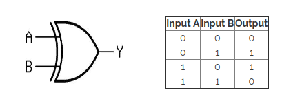
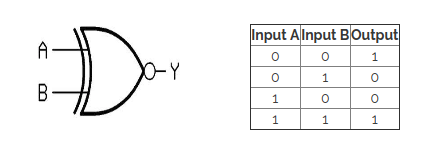
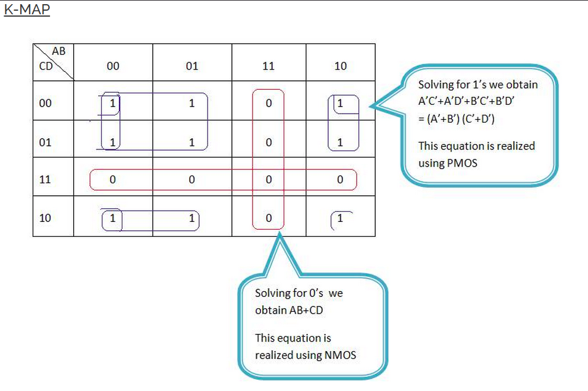
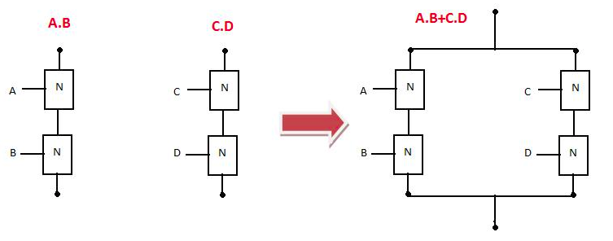
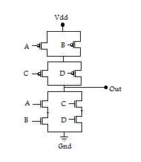

Schematic Design Of Transistor Level XOR & XNOR Gate.
Introduction
XOR(exclusive OR):
For a 2 input XOR, the output of the gate is low when both the inputs are same(either both low or both high). The output is
high if one and only one of the inputs is high. The function is addition modulo 2 and hence the gate is used in half adder
The schematic and truth table for 2 input A and B for XOR gate :-

XNOR(exclusive NOR):
For a 2 input XNOR, the output of the gate is high when both the inputs are same(either both low or both high). The output is
low if one and only one of the inputs is high.
The schematic and truth table for 2 input A and B for XOR gate :-

Theory
We now move towards desining transistor level schematic for any given combinational logic. This is done by analysing the kmap
of the given combination for p- and n-switches and then deducing the required series or parallel combination. The following
example will give you an idea about how to go for designing a combinational logic using transistors. We want to design
transistor level schematic of (AB+CD)'.

Implementation for N-Switches:

The series combination of A and B is in parallel with the series combination of C and D.
Implementation for P-Switches:

The parallel combination of A and B is in series with the parallel combination of C and D.
Complete design:

XOR:
A ⊕ B = AB' + A'B
A' is analogous to C and B' is analogous to D. If implementation is done according to the example described above we would require
5 NMOS and 5 PMOS.
4 NMOS and PMOS for implementation of complement of AB'+A'B
and 1 pair for the inverter.
Now,think of a method to reduce the number of transistor. 1 pair needed for inverting can be reduced if XOR is implemented as the complement of XNOR.
XNOR:
(A ⊕ B)' in the similar way xnor if implemented as complement of A ⊕ B rather than AB+A'B' would require 4 NMOS and PMOS.
In that case A would be analogous to A' and vice versa in the XOR example.